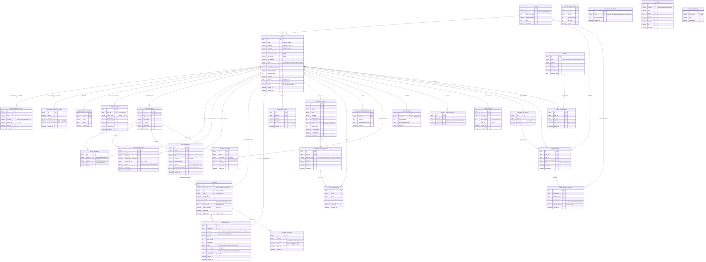

AI 코드 리뷰 SaaS · 4인 팀 프로젝트 · 진행 중
COGI
GitHub PR을 가져와 AI가 코드를 리뷰하고, 이슈와 성장 추이를 팀 단위로 관리하는 서비스입니다. 저는 서비스로 들어오는 세 관문을 맡았습니다.

프로젝트 소개
GitHub Pull Request를 가져와 AI가 코드를 리뷰하고, 발견된 이슈와 팀·개인의 성장 추이를 관리하는 SaaS입니다. 리뷰 결과를 쌓아 약점 패턴을 통계로 보여주고 주간 리포트로 발송하며, 구독 결제와 관리자 운영 기능까지 갖춘 팀 프로젝트입니다.
내 역할
서비스로 들어오는 세 개의 관문을 맡았습니다. 사용자가 처음 만나는 비로그인 체험부터 구독 결제, 운영자용 관리자까지 백엔드를 담당했습니다.
- 비로그인 체험 계정 없이도 AI 리뷰를 써보게 하되 남용을 막는 관문을 설계했습니다.
- 구독 결제 Toss 빌링키 기반 정기결제와 실패 격리 로직을 구현했습니다.
- 관리자 회원, 공지, 약관, AI 사용량을 다루는 운영자 백엔드를 맡았습니다.
시스템 아키텍처
비로그인 체험
가입 전에는 AI 리뷰 품질을 확인할 방법이 없었습니다. 그렇다고 계정 없이 그냥 열어두면 AI 호출 비용을 통제할 수 없었습니다.
guest_token 쿠키로 비회원을 식별하고, Redis 카운터에 첫 요청에만 TTL 24시간을 걸어 사용 횟수를 제한했습니다.
회원가입 없이 리뷰를 체험할 수 있게 열면서도, 게스트 1인당 AI 호출을 24시간 3회로 상한을 고정했습니다.
구현 상세
guest_token쿠키(24시간)로 비회원을 식별하고, 없으면 UUID를 새로 발급합니다.- 체험 횟수는 24시간 뒤 사라져도 되는 값이라, 테이블에 쌓고 만료를 직접 지우는 대신 TTL을 걸 수 있는 Redis를 골랐습니다.
- 카운터를 올리며 첫 요청에만 TTL 24시간을 걸어, 슬라이딩이 아니라 첫 사용 시점 기준으로 리셋되게 했습니다. 초과 시 403.
- 게스트는 경량 모델과 FREE 프롬프트로 고정해 비용을 통제합니다.
- AI 사용량 로그는
userId=null로 남기되, 저장이 실패해도 리뷰 응답은 계속되도록 격리했습니다.
구독 결제
매일 자정 만료 구독을 한꺼번에 청구하는 배치라, 한 건의 결제 실패가 배치 전체를 멈추면 나머지 구독자 청구가 밀립니다.
구독을 건별 @Transactional로 청구해 실패를 격리하고, 최초 구독은 즉시 청구가 실패하면 구독 생성까지 롤백했습니다.
실패한 구독만 FREE로 강등되고 배치는 계속 돕니다. 결제 없이 구독만 생성되는 상태가 생기지 않습니다.
구현 상세
- Toss 빌링키로 최초 구독 시 즉시 1회 청구하고, 실패하면
@Transactional로 구독 생성까지 롤백합니다. - 중복 구독 차단, 결제수단 소유자 검증, 필수 약관 동의 확인으로 경계를 지킵니다.
- 매일 자정 만료 구독을 건별 트랜잭션으로 청구해, 한 건의 실패가 배치 전체를 멈추지 않게 격리했습니다.
- 청구 실패 시 해당 구독만 FREE로 강등하고, 플랜 변경은 일할계산해 히스토리로 남깁니다.
관리자
회원·공지·약관·AI 사용량을 운영자가 직접 다뤄야 했고, 통계 화면은 회원 수만큼 닉네임 조회가 따라붙었습니다.
/api/admin/**을 ROLE_ADMIN으로 잠그고, 공지 메일은 @Async로 뺐습니다. 닉네임은 IN 조회 한 번으로 채웠습니다.
비관리자 접근은 403으로 끊기고, 통계 조회의 N+1 쿼리를 1회 조회로 줄였습니다. 메일 발송이 응답을 붙잡지 않습니다.
구현 상세
/api/admin/**은 JWT가 심은ROLE_ADMIN으로만 접근하게 하고, 비관리자는 403으로 끊습니다.- 회원 역할과 상태 변경, 공지, 약관, 가이드라인 관리를 제공합니다.
- 전체 공지 메일은 회원 수만큼 발송이 걸려 응답을 붙잡을 이유가 없어,
@Async로 백그라운드에 넘기고 건별 실패를 로깅합니다. - AI 사용량 통계에서 닉네임을
IN조회 한 번으로 채워 N+1을 피했습니다.
데이터베이스 ERD

구독 · 결제 · 관리자 도메인 중심 테이블 관계